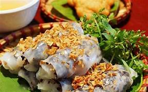
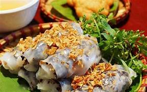

Bánh cuốn nóng
-
Thành phần
- Bột bánh cuốn 400 gram
- Nấm mèo 50 gram
- Thịt heo xay 200 gram
- Hành tím 10 củ
- Ớt 1-2 trái
- Chanh 1/2 quả
- Dầu Ăn 110 ml
- Muối, Tiêu
Hướng dẫn thực hiện
Cho 1,1 lít nước ấm vào 400 gram bột kèm theo 2 muỗng cafe muối và khoáy đều. Sau khi bột đèo cho thêm 2 muỗng dầu ăn vào hỗn hợp bột.

Cho thịt xay vào đảo cho chín thịt, sau đó cho nấm mèo cắt sợi vào đảo cho đều. Thêm 1 muỗng cafe tiêu vào và tắt bếp.

Bạn bắc nồi lên bếp mở lửa vừa, cho 3 muỗng canh đường vào nồi nấu cho tan chảy và chuyển qua màu vàng nhẹ, cho từ từ nước dừa tươi vào, thêm 2 muỗng canh nước mắm, 1 muỗng canh dấm ăn. Tắt bếp và bắc nồi xuống để nguội vắt thêm 1/2 muỗng canh cốt chanh và ớt cắt nhỏ, nêm nếm lại cho phù hợp với khẩu vị gia đình mình, nước mắm chan bánh cuốn phải hơi lạt, ngọt dịu, vị chua nhẹ.

Bạn bắc chảo chống dính lên bếp mở lửa vừa, thêm 200ml nước nấu sôi thì đổ nước ra, quét 1 lớp dầu ăn, đổ một vá bột vào chảo, lắc nhẹ để bột dàn mỏng đều, đậy nắp lại.Sau khoảng 30 giây thì bánh đã chín, bạn đổ bánh ra mâm hoặc thớt sạch (đã quét dầu) rồi nhanh tay đổ bột vào chảo để làm mẻ bánh thứ 2.Trên chiếc bánh đã được đổ ra, bạn múc một muỗng canh nhân thịt lên, trải đều thịt và cuốn lại, lặp lại cho tới khi hết bột.


 
